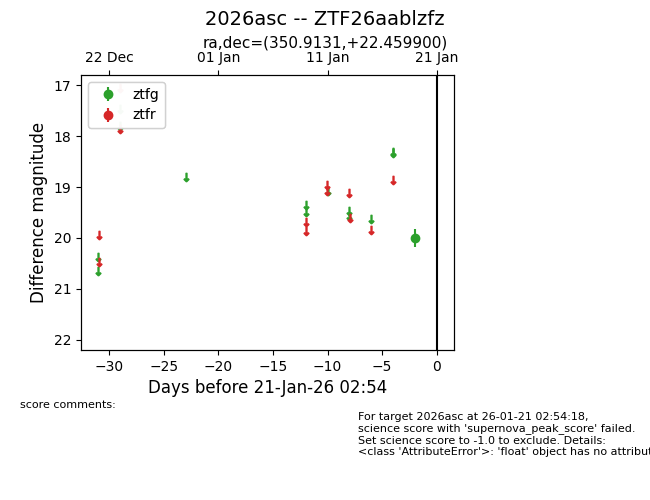
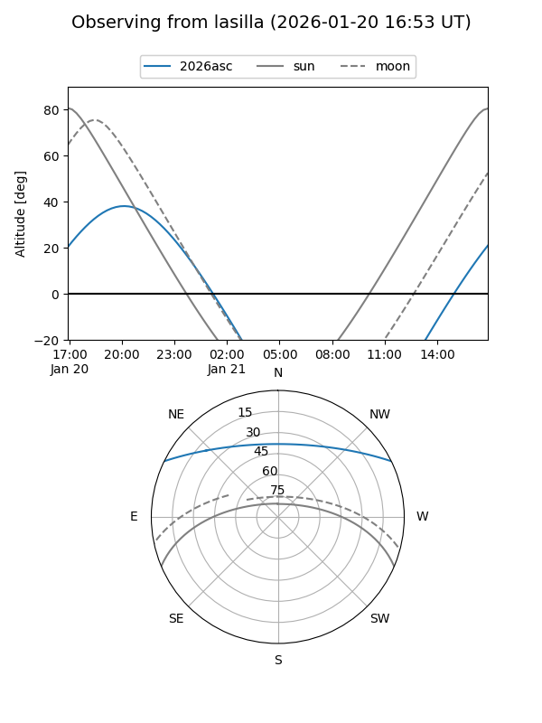
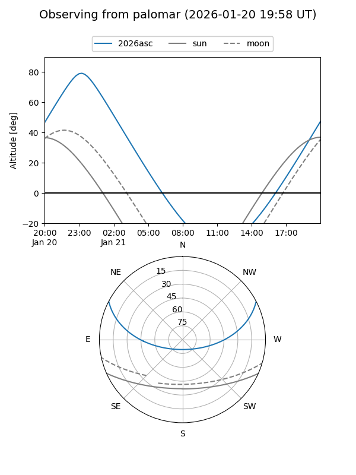

2026asc
Target 2026asc at 2026-01-19 20:06
Aliases and brokers:
FINK: link
Lasair: link
ALeRCE: link
TNS: link
YSE: link
alt names
ZTF26aablzfz (ztf,fink_ztf)
2026asc (tns,yse)
Coordinates:
equatorial (ra, dec) = 350.9131,+22.45990
equatorial (HMS+DMS) = 23:23:39.14,+22:27:35.64
galactic (l, b) = (97.6376,-36.06306)
Flags:
Photometry:
last ztfg=20.01
1 ztfg detections
Lightcurve

Visibility


Additional plots